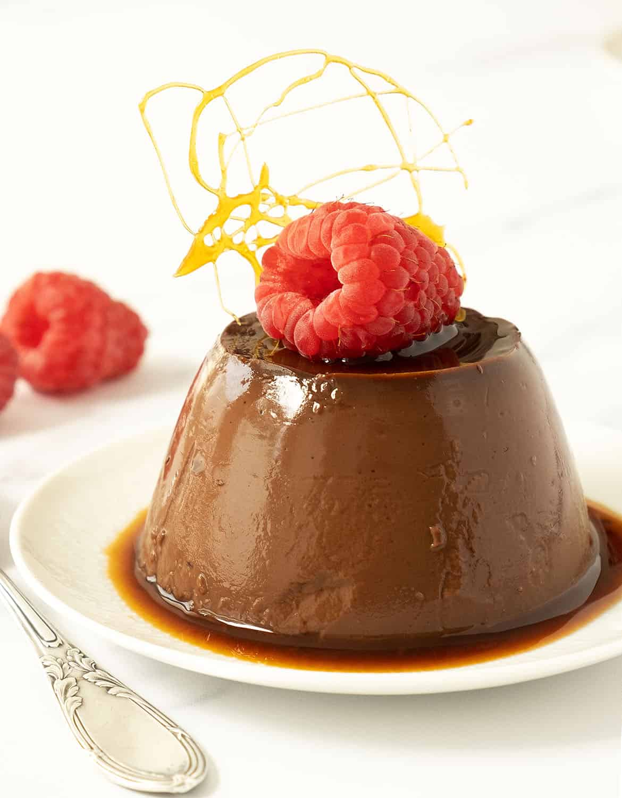
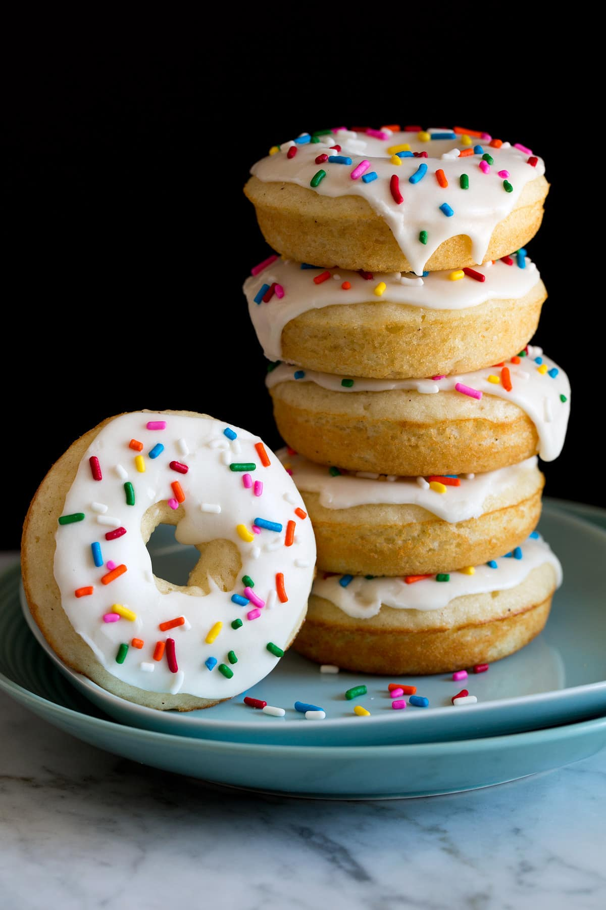
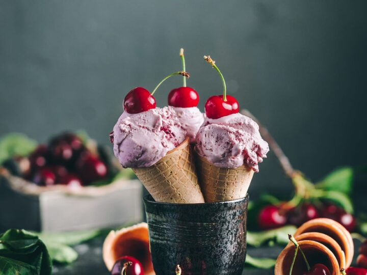
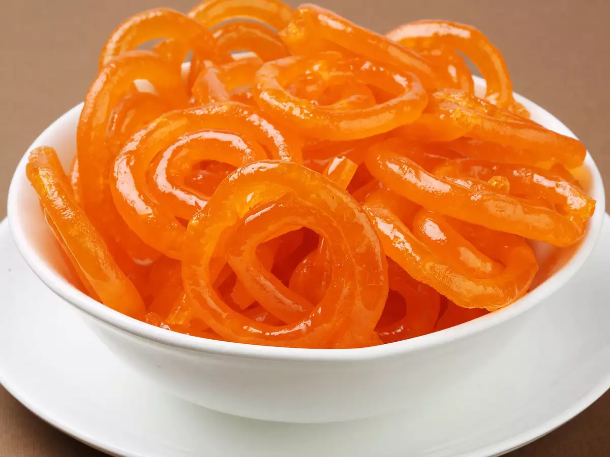

Food Gallery
Cake

Cake is a form of sweet food made from flour, sugar, and other ingredients, that is usually baked. In their oldest forms, cakes were modifications of bread, but cakes now cover a wide range of preparations that can be simple or elaborate, and that share features with other desserts such as pastries, meringues, custards, and pies.
Pudding

Pudding is a type of food that can be either a dessert or a savory (salty or spicy) dish that is part of the main meaIn the United States and Canada, pudding characteristically denotes a sweet, milk-based dessert similar in consistency to egg-based custards, instant custards or a mousse, often commercially set using cornstarch, gelatin or similar coagulating agent such as Jell-O.
Doughuts

A doughnut or donut is a type of leavened fried dough. It is popular in many countries and is prepared in various forms as a sweet snack that can be homemade or purchased in bakeries, supermarkets, food stalls, and franchised specialty vendors.
Icecream

Ice cream is a sweetened frozen food typically eaten as a snack or dessert. It may be made from dairy milk or cream and is flavoured with a sweetener, either sugar or an alternative, and a spice, such as cocoa or vanilla, or with fruit such as strawberries or peaches.
Gulab jamun

Gulab jamun is a milk-solid-based sweet, originating in India and a type of mithai popular in India, Nepal, Pakistan, the Maldives, and Bangladesh, as well as Myanmar. It is also declared as the national dessert of Pakistan officially by Government of Pakistan.
Jalebi

Jalebi, also known as jilapi, jilebi, jilipi, zulbia, jerry, mushabak, or zalabia, is a popular sweet snack in the Indian subcontinent. It is made by deep-frying maida flour batter in pretzel or circular shapes, which are then soaked in sugar syrup. This dessert can be served warm or cold.